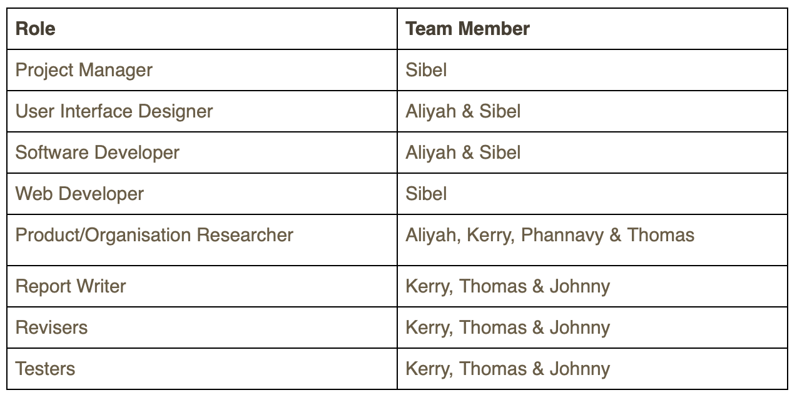

Project Overview
Project Description
Centrelink is a government service that provides payments based on an individual’s circumstances. Because it revolves so heavily around assisting those who are suffering from all sorts of disadvantages, it is imperative to the service that it is made fully accessible to all of its potential users. Not only does the service have to be accessible from a technical standpoint, it also has to be accessible from an intellectual standpoint.
What happens when a person utilises Centrelink for the first time? What potential issues might they encounter?
Oftentimes, when facing something completely new, we can find ourselves intimidated by the task, no matter how big or small it is. Any form of assistance is often welcome, and that is particularly true of a service as impactful as Centrelink. Your ability to understand the scope of your access to the service can be the difference between having sufficient funds to live a slightly strained life, or being unable to afford anymore than a slice of bread per day.
Because Centrelink aims to assist an extremely diverse audience, the circumstances of one’s complications with accessing the service can widely vary. Specificities and details can have a drastic impact on two situations that are seemingly similar. To address this, we would need a form of assistance that can cater to the specific scenarios of different users.
ChattyBox is our response to this issue. The deployment of an AI chatbot will ensure that assistance is always immediately available at all times, and will highly increase the efficiency at which a user can receive in depth responses through the usage of countless macros to not only direct users to pre-existing information that will be relevant to their situation, but also to provide its own advice tailored to the specific demands of the user.
Project Overview
Topic
The purpose of our project is to deliver a better customer experience to all businesses and companies across all platforms by implementing an artificial intelligent chat bot that can recognise problems and help solve them, and that will use speech-to-text and text-to-speech technology. Our chat bot will be implemented and available on applications and websites as a live chat customer help icon.
To start bringing this technology to life, we have partnered with Centrelink to improve their customer service. Centrelink, also known as The Centrelink Master Program, is a Services Australia master program of the Australian Government, and every Australian uses Centrelink for some kind of service. Because of this, Centrelink offices are overwhelmed by customer calls for assistance and help. By implementing our chat bot, we can drastically cut down the number of customer calls Centrelink offices receive because customers will be using our AI chat bot for help and assistance instead.
Motivation
Good customer service is crucial for all companies because without their customers and clients, the businesses wouldn’t thrive. A company's main goal is to deliver to their clients, customers and other stakeholders involved, hence why the Chatty Box team have come together to bring this project to life. Artificial intelligence is already used in the world today, and smart devices can assist those who need it, with speech-to-text and text-to-speech technology already implemented on computers and phones. Now all that is left is to implement that feature into the world's smartest help chat bot. With our cutting-edge artificial intelligent technology, every company and business in the world can deliver exceptional customer service, not just Centrelink.
Landscape
Live help chat features are already available on nearly every platform. Users can click the live chat help button and speak to a help bot through writing messages or choosing options available and the bot will assist them with their queries. However, this feature is at a bare minimum for some applications and is not helpful at all. They are usually not smart enough to assist customers like a human operator would, so customers and clients end up having to contact or email companies anyway. Chatty Box the chat bot will be very different and much more intelligent than the options that are available right now.
Detailed Description
Aims
Customer support tends to be harder to manage as a company or business gets bigger. Due to the nature of Centrelink, customer support is extremely important. The aim of chatbots for centrelink is to enhance this area by being able to provide around the clock support chat. Chatbots are able to learn from information and data from centrelink to be able to give the most relevant and accurate answers as possible. Chatbots are also able to entirely remove the wait time needed for customers to get help without adding many costs.
One goal that is crucial to the completion of the chatbot is gathering enough information and research for the bot to learn how to respond to queries sent by the customers. The gathering of information and data would be the most important part of the project because the information and data it is fed ultimately dictates how useful the chatbot will be. Chatbots are able to use algorithms to assess conversations that they have with customers, allowing them to constantly learn and grow to adapt with the results. This is why chatbots become exponentially better the more data they are given.
Another goal would be to develop a mock up with the team. A mockup will help the team visualize and realistic design and make sure everyone is on the same page. Doing this also allows the team to make decisions on how the final design framework will look.
Smaller Goals
Research + Gather all relevant information and data from Centrelink
Develop common questions & answers
Develop sketch draft design with design ideas
Develop mock up design digitally
Design the User Interface
Get user feedback on design of chatbot
Create and develop improved design version based on feedback
Make chatbot prototype
Test Chatbot prototype - identify any bugs/issues/etc
Gather Feedback/Comments
Develop improved version based on feedback
Pilot Test then rollout to all customers
Roles
With our roles for this assignment, we have had multiple team members work on the same tasks thus we shared roles rather than assigning one specific role to one team member. The Project Manager is Sibel who was in charge of overlooking the entire project, managing and assigning tasks to each team member as well as handling and documenting the report.
We also had two of our team members work on the role as a User Interface Designer. They were in charge of designing how the Chatbot would look like. Our software developer would help create the prototype of the Chatbot. These two roles were managed by Aliyah and Sibel. The Web Developer who was Sibel was in charge of designing the Github website.
Our Product/Organisation Researchers which were Aliyah, Kerry, Phannavy and Thomas helped research Centrelink to find out what the common question and responses of the Chatbot would be. The Report Writers - Kerry, Thomas and Johnny assisted in writing and revising the overall report as well as making sure there weren’t any grammatical or spelling errors.
Scope & Limitations
Time is a very big constraint in this project as we all have a limited amount of time to be able to work on this project due to us having other courses to complete as well as our personal commitments such as our jobs. The deadline is the 18th October 2020 and due to the limited time to work on this project, one of the scopes is that we will have to develop a limited prototype version of the chatbot, instead of an extensive high fidelity prototype that is close to the complete running program.
The prototype must show what the Chatbot will be potentially looking like and how it would be used and interacted with, for its final version.
It must also contain and demonstrate some responses to a potential user query that is commonly asked by Centrelink customers.
There won’t be any costs to this project as all the software and programs that we will be using are free.
Tools & Technologies
Testing
Due to the COVID-19 lockdown, we are very limited on getting users to test our project so we will get our family members to be the user testers. We will need at least 5 people to test our Chatbot. At a minimum they are required to be tech-savvy and know how to use the internet.
They will be rating the design and testing the prototype of the Chatbot, and we will gather their feedback on these 3 metrics:
For the design:
1. Design - Rating how the chatbook looks & aesthetic
2. Ease of use - How easy is it to use and comprehend
3. Overall rating - The overall rating of the chatbot
For the prototype:
1. Ease of use - How easy is it to use and comprehend
2. Interactive interface elements - Rating the chosen elements for interactive purposes (eg. buttons, menus, lists, text fields etc.)
3. Overall rating - The overall rating of the chatbot
They will need to provide a score out of 5 for each of these metrics. A successful test to us will be approval from the majority of the user testers (4/5 members approval). Must have at least 4/5 overall rating for at least 4 members.
Risks
As we developed our chatbot, there were many risks that we had encountered and identified. First of all, for us to be able to complete the chatbot in its entirety will come with great difficulties due to its complexity. It will require hours of learning how to code and understand how machine learning works. This type of subject will require a considerable amount of knowledge and experience as programmers. We also will be potentially not just learning one programming language, but may require other programming languages in order to get our chatbot working.
Speech to text is also another area which may come with great difficulty as we will have to figure out how to program it in a way that it will be efficient and minimise errors/understand different accents. Furthermore, we may need to purchase licensed software to be able to assist us with the development of the chatbot.
Throughout the second phase of our project, a risk we didn’t expect during this project was having one of our team members withdraw from the course. This increased the workload for us as we were one team member short, as it used to be spread out among six members rather than five. However, we were fortunate to gain another team member as a replacement during the early progress of our project. The new team member brought proficient report writing skills to the ChattyBox team and it was really great to gain a new team member.
Another risk and challenge encountered during the project was the fact that we could not meet as a team in person as it puts us at risk of infection from Covid 19 and at the hands of the law as leaving our homes is illegal. So we had to keep everything online, having our meetings and work done online which made teamwork a bit more challenging but still nothing too major. Risks like internet failure put us in a vulnerable position due to the fact that everything was being done online, it could potentially result in work being lost and meetings unable to be held.
Group Processes & Communication
Our team’s main form of communication will be via Microsoft Teams. We will also be communicating through Facebook Messenger and Google Docs where we will discuss the project at least 2-3 times a week depending on our circumstances.
We will also have scheduled weekly video call meetings every Sunday at 11am to discuss our progress and ideas which will be done through Microsoft Teams. We will also share our files through this platform.
If one of our group members does not respond, we will attempt to contact them via RMIT email or mentioning them on Facebook Messenger.